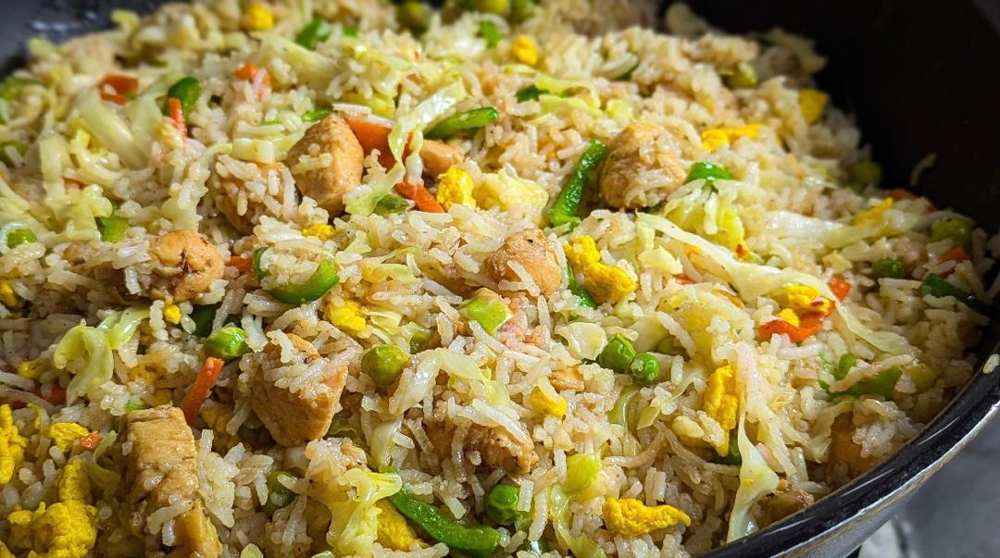
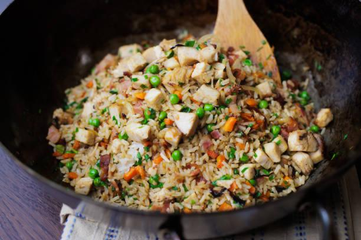
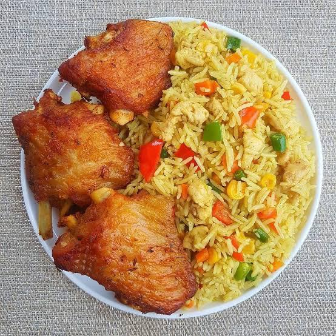

Chinese-style Turkey Fried Rice with Grilled Turkey
A savory, smoky, and satisfying dish featuring tender, marinated grilled turkey breast served alongside a vibrant Chinese-style fried rice loaded with vegetables and savory seasonings. Perfect for a weeknight meal or using up leftover rice.
Prep time: 20 minutes
Cook time: 25 minutes
Servings: 4
Difficulty: Medium
Ingredients list
2 Tbsp Soy Sauce
1 Tbsp Rice Vinegar
1 Tbsp Hoisin Sauce
1 clove garlic, minced
1 lb Turkey Breast (cut into 1-inc thick cutlets or cubes)
1/2 tsp Ginger, grated
Green onions, chopped (for garnish)
3 cups Cooked, Day-old White Rice
2 Eggs, Lightly whisked
Instructions
Marinate the Turkey:Combine sauces, Vinegar, and aromatics. Add turkey and marinate for at least 30 minutes.
Grill the Turkey: Preheat grill to medium-high. Grill the turkey pieces for 4-6 minutes per side.Let the turkey rest for 5 minutes before slicing.
Scramble the Eggs: Heat 1/2 Tbsp of oil in a large wok or skillet over medium-high heat. Pour the whisked eggs and quickly Scramble them. Once cooked, remove and set aside.
saute aromatics and veggies: Add the remaining 1.5 Tbsp of oil to the wok.Add the diced onion and saute for 1 minute. Add the mixed vegetablesand stir for 3-4 minutes until slightly tender-crisp.
Fry the Rice: Add the chilled rice to the wok. Break up any clumps and stir-fry vigorously for 3-5 minutes until the rice is heated through.
Season and combine: Add the 2 Tbsp pf soy sauce, 1 tsp od sesame oil, and white pepper. Stir well to coat the rice evenly
Return the scrambled eggs and the sliced grilled Turkey to the wok. Toss everything gently to combine and heat through, about 1 minute.
Serve: Divide the fried rice and sliced turkey among the serving plates. garnish Generously with chopped green onions.
Nutritional fact
Calories: 350 Kcal
Protein: 25-46g
Total fat: 10-23g
carbohydrates: 35-86g
Sodium: 400-1890mg
Dietary fiber 1-6g



Tips
The grilled turkey needs time to absorb the flavors. Marinate for at least 30 minutes
Pat it Dry Before Grilling: Before placing the turkey on the grill, gently pat the surface of the meat dry with paper towels
Don't Overcook: Turkey breast is very lean and dries out easily.
Don't Crowd the Wok: If you are making a large batch, fry the rice in two smaller batches. Crowding the wok will lower the temperature, causing the rice to steam instead of fry.
Add Sauce Last: Only add the soy sauce and sesame oil after the rice has been heated through and the vegetables are cooked. Pouring the sauce on cold rice can make it soggy.